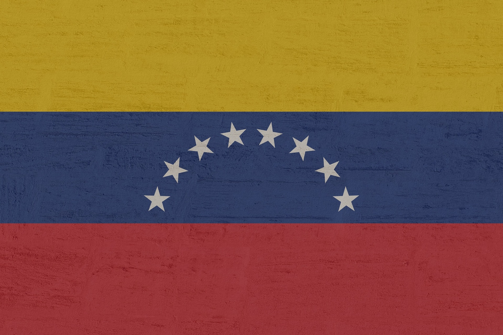
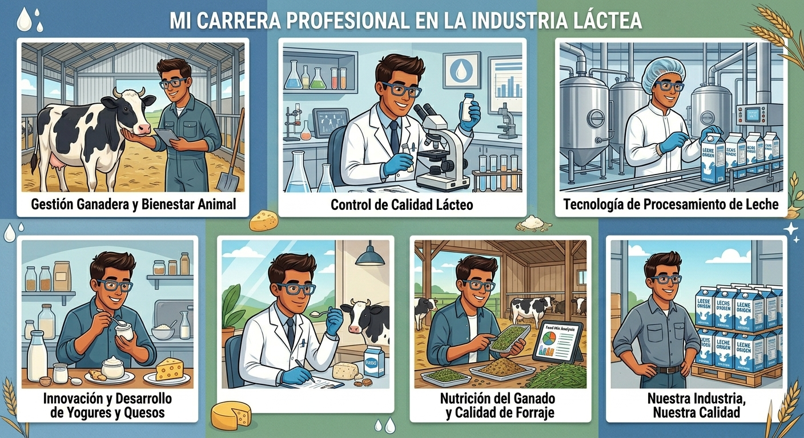

Información Personal

Lugar de Nacimiento: Valencia, Carabobo, Venezuela

Nacionalidad: Venezolana
Pasatiempos
Leer libros de desarrollo personal, salud emocional y alguna novela
Escuchar música
Ver documentales y series en streaming
Scrollear un poco en redes sociales
Ver videos interesantes en YouTube sobre filosofías orientales, noticias, entre otros temas
Senderismo
Ir de bares y tapas
Mis Estudios

Título: Diplomatura Universitaria en Ganadería y Tecnología de Alimentos
Institución: Instituto Universitario de Tecnología del Mar (IUTEMAR) - Campus Agropecuario de Boconó, Estado Trujillo, Venezuela
Resolución de problemas
Adaptabilidad
Liderazgo